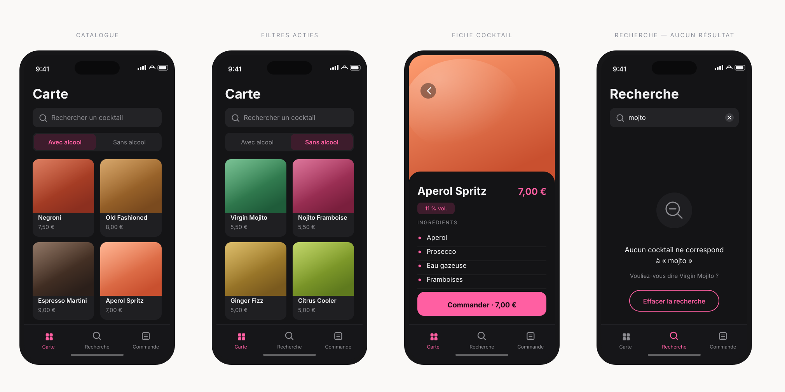

01
Bar à cocktails
Un client debout, dans le bruit, une seule main libre. Le catalogue est donc visuel, le filtre permanent, la recherche instantanée.
Les décisions de conception
Ce que j'ai tranché
- Catalogue visuel en premier écran
- Filtre alcool / sans alcool toujours visible
- Recherche sans validation
- Cibles tactiles pensées pour le pouce
Ce que je referais
Je n'avais pas dessiné les états vides. Je conçois désormais les quatre états — vide, chargement, erreur, succès — avant la première ligne de vue. Le quatrième écran est cette correction.